The intended audience of this guide is everybody who wants to:
People who want to know about the capabilities of QUANTUM ESPRESSO, or who want just to use it, should read the User Guide instead of (or in addition to) this guide. In addition to the general User Guide, there are also package-specific guides.
People who want to know about the methods or the physics behind QUANTUM ESPRESSO should read first the relevant literature (some pointers in the User Guide).
You can contribute to a better QUANTUM ESPRESSO, even as an ordinary user, by:
QUANTUM ESPRESSO is not organized as a monolithic code, but rather as a distribution (integrated suite) of ``packages'', with varying degrees of integration, that can be installed on demand, or sometimes independently. There is a ``shell'' structure, with at the center the core distribution, including
There is then a shell of external packages, which typically read data produced by QUANTUM ESPRESSO but do not need it to work. Some of them (notably Yambo, Wannier90, WanT) can be automatically downloaded and installed from the core distribution using make.
Finally there are plugins: these modify QUANTUM ESPRESSO packages, adding new functionalities. Currently the following plugins are available:
If you want to get involved as a developer and contribute serious or nontrivial stuff (or even simple and trivial stuff), you should first of all register on qe-forge.org, following the instructions.
Important notice: qe-forge.org will be upgraded in the next months with new hardware and software. Some of the following pieces of information may become obsolete.
qe-forge.org is the portal for QUANTUM ESPRESSO developers, contributors, and for anybody else wanting to develop a project in the field of atomistic simulations. qe-forge.org provides for each project a repository, mailing lists, a wiki, upload space, a bug tracking facility, various other tools that are useful for developers.
Once you have obtained an account (please follow the instructions and introduce yourself when you register: the site administrator has to be sure that you are a real person!) you may open your own project, retaining all rights on it (including the right not to release anything): at the end of the "projects" page, click on the link "add new project", fill the form (note that the Unix name given to the project cannot be modified). You have the choice between a repository using CVS, SVN, git, others. Please don't even think using CVS (obsolete), prefer git (it is easier to move the repository).
You may as well register as a developer in an existing project: go to the project page, click on button ''Request to become a developer'' under the ''Activity'' graph on the top of the column at the right, to obtain the permission from the administrator of the project (please contact the project administratior by mail!).
You need to register your SSH keys in order to have read-write access the repository (if you have such permissions). Generate keys on your work machine if you haven't already, using command ssh-keygen -t rsa. The keys are typically found in file .ssh/id-rsa.public. Then
Currently QUANTUM ESPRESSO uses the following development tools:
All QUANTUM ESPRESSO developer are strongly invited to subscribe to the two mailing lists q-e-developers and q-e-commits. Those who don't, lose i) the opportunity to follow what is going on, ii) the right to complain if something has gone into a direction they don't like. Note that subscription to mailing lists is not automatic when you register: you should subscribe using the links in http://www.qe-forge.org/gf/project/q-e/mailman/. Please also consider subscribing to the bug tracker: select the "Tracker" item on the left, then select "Bugs", then click on "Start monitoring". You will receive an e-mail every time a bug is filed.
Various procedures can be followed to contribute new developments. It is possible to contribute:
As a rule: if you plan to release your work in the public release, you should always keep your work aligned to the current development version of QUANTUM ESPRESSO. This is especially important if your project
The sole exception is when your changes are either relatively small, or localized to a small part of QUANTUM ESPRESSO, or they are quite independent anyway from the rest of QUANTUM ESPRESSO. In that case, you can just send a patch or the modified routine(s) to an expert developer who will review it and take the appropriate steps.
Notice: the development model of QUANTUM ESPRESSO has undergone significant changes between releases 5.3 and 5.4. Since v.5.4, only package maintainers and a few expert developers are allowed to commit into the main ("trunk") SVN repository. Only ``safe'' changes can be committed: the repository should always be at or close to production status. SVN branches are discouraged: experience shows that too many branches are never merged.
Due to various qe-forge.orglimitations and a change in access policy, anonymous SVN access is also disabled. People who need to regularly access to a development version may use the link to the "Daily Snapshot" on the www.quantum-espresso.org web site.
People who need to stay aligned to the development of QUANTUM ESPRESSObut they do not contribute directly into the code can use a mirrored version of the repository done using git, available on qe-forge.org. Please apply for an account on the portal if you haven't one (see Sect.3.1 for details) then contact support[.at.]qe-forge.org for authorization (remember to explain what you need and why). Once the access is set, tadd a public SSH key on QE-FORGE and then check out the repository using this command:
git clone ssh://username@qeforge.qe-forge.org/gitroot/q-e-private
This repository is only for pull operation and it is "one-way" repository,
meaning it is kept automatically aligned by a script with the SVN repository.
Committing into this GIT mirror does not produce a commit in the SVN. See
Sect.12, ``Using git'', for more instructions on how to
use git.
If your project involves a major new addition (e.g. a new package),
consider registering it as a new qe-forge.orgproject, with a separate
SVN or (better) git repository. It is possible to keep the
project private, or to restrict access to selected QUANTUM ESPRESSOdevelopers.
Important: if you closely develop to QUANTUM ESPRESSOthen keep your copy of the distribution aligned to the SVN. Don't work for years, or even for months, without keeping an eye to what is going on in the SVN or in the mirrored GIT repository. This is especially true for projects that are ``tightly bound'' to QUANTUM ESPRESSO, that is, use QUANTUM ESPRESSO code and routines. Frequently update your copy (using command svn update or git pull), verify if changes made meanwhile by other developers conflict with your changes. Conflicts are in most cases easy to solve: see Sect. 11.2 for hints on how to remove conflicts and on how to figure out what went wrong.
If instead your project is ``loosely coupled'', that is, it just uses the QUANTUM ESPRESSO installation procedure and/or data files, it is less likely to run into problems, since major incompatible changes are quite rare. You may still need to verify from time to time that everything keeps working. though.
Since release 5.2 (June 20, 2015), stable release are packaged at fixed dates. The initial schedule is a release every three to four months. Since v.5.4 bugfix releases are no longer packaged.
Releases are stored to qe-forge.org. Given the size of the complete distribution, the release is split into a ``core'' distribution and ``add-ons'', additional packages, that can be downloaded and installed on demand from the core distribution. ``External'' packages can be independently released, as long as there is no compatibility problem.
The automatic downloading of packages is implemented in file install/plugins_makefile and configured in file install/plugins_list. For independently released packages, it is sufficient to update links. For add-ons packages, not contained in the core distribution, there is however a catch-22: the core distribution must know the link to all packages it downloads, but these are known only after such packages are uploaded to qe-forge.org (and the only way to discover the exact link is to go over the released package with the mouse). The workaround is that the core distribution looks for generic names, written in file install/plugins_list. These names are translated by qe-forge.org into specific names. After all packages have been uploaded, file /var/lib/gforge/archives/index.php, residing on qe-forge.org, must be edited and links updated. This requires system privileges on the machine hosting qe-forge.org.
Edit the script dev-tools/release.sh to make tarballs.
Since v.5, the directory structure of QUANTUM ESPRESSO reflects its organization into packages. Each package is stored into a specific subdirectory. In addition, there is a set of directories, common to all packages, containing common code, libraries, installation utilities, general documentation.
Common files and directories in the espresso/ directory are:
install/ configure include/ make.inc archive/ Makefile dev-tools/ License pseudo/ README Doc/ environment_variables clib/ bin/ Modules/ LR_Modules/ COUPLE/ upftools/Apart from License and README whose meaning is obvious, the other files and directories are related to
The core distribution also contains the three package-specific directories PW/, PP/, CPV/, for PWscf, PostProc, CP, respectively. Typical subdirectory structure of a directory containing a package (e.g. PW/):
Makefile examples/ tests/ Doc/ src/Note that:
Let us review the files related to compilation and linking:
make target checks for dependencies, recursively goes into subdirectories executing make again. The behavior of make is thus determined by many Makefile's in the various directories. The most important files are Makefile's in the directories containing sources, e.g. Modules/Makefile, PW/src/Makefile.
Dependencies of Fortran files are contained in make.depend files in each source directory. These files must be updated if you change the sources, running script install/makedeps.sh or using command make depend.
include make.incContains machine- and QUANTUM ESPRESSO-specific definitions
default : @echo 'to install, type at the shell prompt:' ...If no target specified, ask for one, giving a list of possibilities
pw : bindir mods liblapack libblas libs libiotk libenviron
if test -d PW ; then \
( cd PW ; $(MAKE) TLDEPS= all || exit 1) ; fi
Target pw: first check the list of dependencies bindir
mods ... etc., do what is needed; then go into PW/ and give command
make all. Note the use of exit 1, which is required to forward
the exit status of the sub-directory make to this makefile, since the section
in parenthesis is run in a subshell and the if / fi block will otherwise
``hide'' its the return status and make will continue in case of errors.
neb : bindir mods libs pw
( cd install ; $(MAKE) -f plugins_makefile $@ || exit 1 )
Target neb: do all of the above, then go into directory
install/ where make neb using plugins_makefile
as Makefile will check if NEB is there, download from the network if not,
compile and link it
libblas : touch-dummy
cd install ; $(MAKE) -f extlibs_makefile $@
Target libblas: this is an external library, that may or may
not be needed, depending upon what is written in make.inc. If
needed, go into directory install/ where make libblas using
extlibs_makefile as Makefile will check if BLAS are there, download
from the network if not,
compile and build the library
sinclude ../make.inc
default : all
all: pw pwtools
pw:
( cd src ; $(MAKE) all || exit 1 )
pwtools: pw
( cd tools ; $(MAKE) all || exit 1 )
...
Target pw: go into src/ if it exists, and (apart
from make wizardry) give command make pw. It is important
to note that pwtools has to depend on pw or else this
makefile will break when calling parallel make using make -j#
Other targets are quite similar: go into a subdirectory, e.g.
Doc/ and 'make something', e.g. make clean.
include ../../make.incContains machine- and QUANTUM ESPRESSO-specific definitions
MODFLAGS= $(MOD_FLAG)../../iotk/src $(MOD_FLAG)../../Modules $(MOD_FLAG).\
$(MOD_FLAG)../../FFTXlib $(MOD_FLAG)../../LAXlib
Location of needed modules; MOD_FLAG is defined in
make.inc
PWOBJS = \ pwscf.oObject file containing main program (this is actually redundant)
PWLIBS = \ a2fmod.o \ ... wannier_enrg.oList of objects - add here new objects, or delete from this list. Do not forget the backslash! It ensure continuation of the line
QEMODS=../../Modules/libqemod.a ../../FFTXlib/libqefft.a ../../LAXlib/libqela.aObjects from Modules/ are available from the above archive. The directory where F95 modules are must also be specified to the compiler!
TLDEPS=bindir mods libs liblapack libblas libenvironTLDEPS=Top-Level DEPendencieS: a machinery to ensure proper compilation with correct dependencies also if compiling from inside a package directory and not from top level
LIBOBJS = ../../clib/clib.a ../../iotk/src/libiotk.aAll needed QE-specific libraries
all : tldeps pw.x generate_vdW_kernel_table.xTargets that will be build - add here new executables
pw.x : $(PWOBJS) libpw.a $(LIBOBJS) $(QEMODS)
$(LD) $(LDFLAGS) -o $@ \
$(PWOBJS) libpw.a $(QEMODS) $(LIBOBJS) $(LIBS)
- ( cd ../../bin; ln -fs ../PW/src/$@ . )
Target pw.x - produces executable with the same name.
It also produces a link to the executable in espresso/bin/.
Do not forget tabulators even if you do not see them!
All variables (introduced by $) are either defined locally
in Makefile or imported from make.inc
libpw.a : $(PWLIBS)
$(AR) $(ARFLAGS) $@ $?
$(RANLIB) $@
This builds the library libpw.a - again, do not forget tabulators
tldeps:
test -n "$(TLDEPS)" && ( cd ../.. ;
$(MAKE) $(TLDEPS) || exit 1) || :
second part of the TLDEPS machinery
clean :
- /bin/rm -f *.x *.o *.a *~ *.F90 *.d *.mod *.i *.L
There should always be a ''clean'' target, removing all compiled (*.o)
or preprocessed (*.F90) stuff - compiled F95 modules may have different
filenames: the four last items cover most cases
include make.dependContains dependencies of objects upon other objects. Sample content of file make.depend (can be produced by install/makedep.sh):
a2fmod.o : ../../Modules/io_global.o a2fmod.o : ../../Modules/ions_base.o a2fmod.o : ../../Modules/kind.o a2fmod.o : pwcom.o a2fmod.o : start_k.o a2fmod.o : symm_base.otells us that the listed objects must have been compiled prior to compilation of a2fmod.o - make will take care of this.
BEWARE: the Makefile system is in a stable but delicate equilibrium, resulting from many years of experiments on many different machines. Handle with care: what works for you may break other cases.
Fortran-95 source code contains preprocessing option with the same syntax used by the C preprocessor cpp. Most F95 compilers understand preprocessing options -D ... or some similar form. Some compilers however do not support or do not implement properly preprocessing. In this case the preprocessing is done using cpp. Normally, configure takes care of this, by selecting the appropriate rule @f90rule@ below, in this section of file make.inc.in:
.f90.o: @f90rule@and producing the appropriate file .inc.
Preprocessing is useful to
Note: include/f_defs.h is obsolete and must not be used any longer.
The following capabilities of the C preprocessor are used:
#if defined (__expression)
...code A...
#else
...code B...
#endif
If __expression is defined (with a #define command
or from the command line with option -D__expression),
then ...code A... is sent to output; otherwise
...code B... is sent to output.
#if defined (XXX), not
#if defined XXX or #ifdef XXX.
The configure script is generated from its source file configure.ac by the GNU autoconf utility (http://www.gnu.org/software/autoconf/). Don't edit configure directly: whenever it gets regenerated, your changes will be lost. Instead, go to the install/ directory, edit configure.ac and/or files install/mt/*.m4, then run autoconf to regenerate configure. If you want to keep the old configure, make a copy first.
GNU autoconf is installed by default on most Unix/Linux systems. If you don't have it on your system, you'll have to install it. You will need a recent version (e.g. v.2.65) of autoconf, because our configure.ac file uses recent syntax.
configure.ac is a regular Bourne shell script (i.e., "sh" - not csh!), except that:
You may refer to the GNU autoconf Manual for more info.
make.inc.in is the source file for .inc, that configure generates: you might want to edit that file as well. The generation procedure is as follows: if configure.ac contains the macro "AC_SUBST(name)", then every occurrence of "@name@" in the source file will be substituted with the value of the shell variable "name" at the point where AC_SUBST was called.
Similarly, configure.msg is generated from configure.msg.in: this file is only used by configure to print its final report, and isn't needed for the compilation. We did it this way so that our configure may also be used by other projects, just by replacing the QUANTUM ESPRESSO-specific configure.msg.in by your own.
configure writes a detailed log of its operation to config.log. When any configuration step fails, you may look there for the relevant error messages. Note that it is normal for some checks to fail.
In order to support a previously unsupported architecture, first you have to figure out which compilers, compilation flags, libraries etc. should be used on that architecture. In other words, you have to write a .inc that works: you may use the manual configuration procedure for that (see the User Guide). Then, you have to modify configure so that it can generate that .inc automatically.
To do that, you have to add the case for your architecture in several places throughout configure.ac:
Look for these lines:
if test "$arch" = ""
then
case $host in
ia64-*-linux-gnu ) arch=ia64 ;;
x86_64-*-linux-gnu ) arch=x86_64 ;;
*-pc-linux-gnu ) arch=ia32 ;;
etc.
Here you must add an entry corresponding to your architecture and
operating system. Run config.guess to obtain the string identifying
your system.
For instance on a PC it may be "i686-pc-linux-gnu", while on IBM SP4
"powerpc-ibm-aix5.1.0.0". It is convenient to put some asterisks to
account for small variations of the string for different machines of
the same family. For instance, it could be "aix4.3" instead of
"aix5.1", or "athlon" instead of "i686"...
Look for these lines:
# candidate compilers and flags based on architecture
case $arch in
ia64 | x86_64 )
...
ia32 )
...
aix )
...
etc.
Add an entry for your value of $arch, and set there the appropriate values for several variables, if needed (all variables are assigned some reasonable default value, defined before the "case" block):
- "try_f90" should contain the list of candidate Fortran 90 compilers, in order of decreasing preference (i.e. configure will use the first it finds). If your system has parallel compilers, you should list them in "try_mpif90".
- "try_ar", "try_arflags": for these, the values "ar" and "ruv" should be always fine, unless some special flag is required (e.g., -X64 With sp4).
- you should define "try_dflags" if there is any preprocessing option specific to your machine: for instance, on IBM machines, "try_dflags=-D__AIX" . A list of such flags can be found in file include/defs.h.README.
You shouldn't need to define the following: - "try_iflags" should be set to the appropriate "-I" option(s) needed by the preprocessor or by the compiler to locate *.h files to be included; try_iflags="-I../include" should be good for most cases
For example, here's the entry for IBM machines running AIX:
aix )
try_mpif90="mpxlf90_r mpxlf90"
try_f90="xlf90_r xlf90 $try_f90"
try_arflags="-X64 ruv"
try_arflags_dynamic="-X64 ruv"
try_dflags="-D__AIX -D__XLF"
;;
The following step is to look for both serial and parallel fortran
compilers:
# check serial Fortran 90 compiler...
...
AC_PROG_F77($f90)
...
# check parallel Fortran 90 compiler
...
AC_PROG_F77($mpif90)
...
echo setting F90... $f90
echo setting MPIF90... $mpif90
A few compilers require some extra work here: for instance, if the
Intel Fortran compiler was selected, you need to know which version
because different versions need different flags.
At the end of the test,
- $mpif90 is the parallel compiler, if any; if no parallel compiler is found or if -disable-parallel was specified, $mpif90 is the serial compiler
- $f90 is the serial compiler
Next step: the choice of (serial) C and Fortran 77 compilers. Look for these lines:
# candidate C and f77 compilers good for all cases
try_cc="cc gcc"
try_f77="$f90"
case "$arch:$f90" in
*:f90 )
....
etc.
Here you have to add an entry for your architecture, and since the
correct choice of C and f77 compilers may depend on the fortran-90
compiler, you may need to specify the f90 compiler as well.
Again, specify the compilers in try_cc and try_f77 in order of
decreasing preference. At the end of the test,
- $cc is the C compiler
- $f77 is the Fortran 77 compiler, used to compile *.f files (may coincide with $f90)
Look for these lines:
# check Fortran compiler flags
...
case "$arch:$f90" in
ia64:ifort* | x86_64:ifort* )
...
ia64:ifc* )
...
etc.
Add an entry for your case and define:
- "try_fflags": flags for Fortran 77 compiler.
- "try_f90flags": flags for Fortran 90 compiler. In most cases they will be the same as in Fortran 77 plus some others. In that case, define them as "$(FFLAGS) -something_else".
- "try_fflags_noopt": flags for Fortran 77 with all optimizations turned off: this is usually "-O0". These flags used to be needed to compile flib/dlamch.f; likely obsolete
- "try_ldflags": flags for the linking phase (not including the list of libraries: this is decided later).
- "try_ldflags_static": additional flags to select static compilation (i.e., don't use shared libraries).
- "try_dflags": must be defined if there is in the code any preprocessing option specific to your compiler (for instance, -D__INTEL for Intel compilers). Define it as "$try_dflags -D..." so that pre-existing flags, if any, are preserved.
- if the Fortran 90 compiler is not able to invoke the C preprocessor automatically before compiling, set "have_cpp=0" (the opposite case is the default). The appropriate compilation rules will be generated accordingly. If the compiler requires that any flags be specified in order to invoke the preprocessor (for example, "-fpp " - note the space), specify them in "pre_fdflags".
For example, here's the entry for ifort on Linux PC:
ia32:ifort* )
try_fflags="-O2 -tpp6 -assume byterecl"
try_f90flags="\$(FFLAGS) -nomodule"
try_fflags_noopt="-O0 -assume byterecl"
try_ldflags=""
try_ldflags_static="-static"
try_dflags="$try_dflags -D__INTEL"
pre_fdflags="-fpp "
;;
Next step: flags for the C compiler. Look for these lines:
case "$arch:$cc" in
*:icc )
...
*:pgcc )
...
etc.
Add an entry for your case and define:
- "try_cflags": flags for C compiler.
- "c_ldflags": flags for linking, when using the C compiler as linker. This is needed to check for libraries written in C, such as FFTW.
- if you need a different preprocessor from the standard one ($CC -E), define it in "try_cpp".
For example for XLC on AIX:
aix:mpcc* | aix:xlc* | aix:cc )
try_cflags="-q64 -O2"
c_ldflags="-q64"
;;
Finally, if you have to use a nonstandard preprocessor, look for these
lines:
echo $ECHO_N "setting CPPFLAGS... $ECHO_C"
case $cpp in
cpp) try_cppflags="-P -traditional" ;;
fpp) try_cppflags="-P" ;;
...
and set "try_cppflags" as appropriate.
To instruct configure to search for libraries, you must tell it two things: the names of libraries it should search for, and where it should search.
The following libraries are searched for:
- BLAS or equivalent. Some vendor replacements for BLAS that are supported by QUANTUM ESPRESSO are:
MKL on Linux, 32- and 64-bit Intel CPUsMoreover, ATLAS is used over BLAS if available.
ACML on Linux, 64-bit AMD CPUs
ESSL on AIX
SCSL on sgi altix
SUNperf on sparc
- LAPACK or equivalent. Some vendor replacements for LAPACK are supported by QUANTUM ESPRESSO, e.g.: Intel MKL, IBM ESSL
- FFTW (version 3) or another supported FFT library (e.g Intel DFTI, IBM ESSL)
- the IBM MASS vector math library
- an MPI library. This is often automatically linked by the compiler
If you have another replacement for the above libraries, you'll have to insert a new entry in the appropriate place.
This is unfortunately a little bit too complex to explain.
Basic info:
"AC_SEARCH_LIBS(function, name, ...)" looks for symbol
"function" in library "libname.a". If that is found, "-lname" is
appended to the LIBS environment variable (initially empty).
The real thing is more complicated than just that because the
"-Ldirectory" option must be added to search in a nonstandard
directory, and because a given library may require other libraries as
prerequisites (for example, Lapack requires BLAS).
Subdirectory clib/ contains libraries written in C
(*.c). There are currently two different ways to
ensure that fortran can call C routines. The new and recommanded
way uses the fortran-95 intrinsic iso_c_binding module.
See Modules/wrappers.f90 for inspiration and examples.
Reference documentation can be found for instance here:
https://gcc.gnu.org/onlinedocs/gfortran/Interoperable-Subroutines-and-Functions.html
The old way uses macros in C routines:
``G vectors are generated in the ggen subroutine in Modules/recvec_subs.f90. You may also have a look at routine PW/src/n_plane_waves.f90 to understand how things work. In general, G vectors are determined by the condition
| 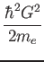Ec = 4Ewc | (1) |
Concerning each orbital corresponding to a specific k point, you use the condition
| 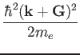Ewc | (2) |
In order to manage the G vectors for each k-point, you can use the arrays ngk (number of G vectors for each k-point) and igk_k (index of G corresponding to a given index of k + G; basically an index that allows you to identify the G vectors corresponding to a given k and order them).
For example the kinetic energy corresponding to a given k-point ik is
g2kin(1:ngk(ik)) = ( ( xk(1,ik) + g(1,igk_k(1:ngk(ik),ik)) )**2 + &
( xk(2,ik) + g(2,igk_k(1:ngk(ik),ik)) )**2 + &
( xk(3,ik) + g(3,igk_k(1:ngk(ik),ik)) )**2 ) * tpiba2
where tpiba2
= (2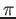/a)2.
There is only one FFT for the wavefunctions so the grid does not depend
upon the k-points; however, for a given wavefunction, only the components
corresponding to a G vector that satisfy
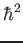(+)2/2me Ewc
are different from 0'' (adapted from an answer by Dario Rocca).
Ewc
are different from 0'' (adapted from an answer by Dario Rocca).
In calculations using only the point (k=0), the Kohn-Sham orbitals can be chosen to be real functions in real space, so that (G) = (- G). This allows us to store only half of the Fourier components. Moreover, two real FFTs can be performed as a single complex FFT. The auxiliary complex function is introduced: (r) = 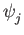(r) + i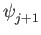(r) whose Fourier transform (G) yields
(G) = 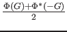,(G) = 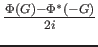.
A side effect on parallelization is that G and - G must reside on the same processor. As a consequence, pairs of columns with Gn'1, n'2, n'3 and G-n'1,-n'2, n'3 (with the exception of the case n'1 = n'2 = 0), must be assigned to the same processor.
The two main packages, PWscf and CP, support restarting from interrupted calculations, Restarting is trivial in CP: it is sufficient to save from time to time a restart file containing wavefunctions, orthogonality matrix, forces, atomic positions, at the current and previous time step.
Restarting is much more complicated in PWscf. Since v.5.1. restarting from interrupted calculations is possible ONLY if the code has been explicitly stopped by user. It is not practical to try to restart from any possible case, such as e.g. crashes. This would imply saving lots of data all the time. With modern machines, this is not a good idea. Restart in PWscf currently works as follows:
psi( 1, 1, 1)
psi( 2, 1, 1)
...
psi(nr1x, 1, 1)
psi( 1, 2, 1)
psi( 2, 2, 1)
...
psi(nr1x, 2, 1)
...
...
psi(nr1x,nr2x, 1)
...
psi(nr1x,nr2x,nr3x)
etc
Let ind be the position of the (i,j,k) element in the above list:
the following relation
ind = i + (j - 1) * nr1x + (k - 1) * nr2x * nr1x
holds. This should clarify the relation between 1D and 3D indexing. In real
space, the (i,j,k) point of the FFT grid with dimensions
nr1 (
The distinction between the dimensions of the FFT grid, (nr1,nr2,nr3) and the physical dimensions of the array, (nr1x,nr2x,nr3x) is done only because it is computationally convenient in some cases that the two sets are not the same. In particular, it is often convenient to have nrx1=nr1+1 to reduce memory conflicts.
In MPI parallelization, a number of independent processes are started on as many processors, communicating via calls to MPI libraries (the code will work even with more than one process per processor, but this is not a smart thing to do). Each process has its own set of variables and knows nothing about other processes' variables. Variables that take little memory are replicated on all processors, those that take a lot of memory (wavefunctions, G-vectors, R-space grid) are distributed.
Calls to MPI libraries should be confined to a few selected places, not scattered everywhere into the source code. The vast majority of parallel operations consist either in broadcasts from one processor to all others, or in global operations: parallel sums and transpose. All you need is the MPI communicator (plus the ID of the root processor for broadcasts), and the appropriate call to wrapper routines, contained in espresso/Modules/mp.f90 and espresso/Modules/mp_base.f90. For instance: mp_sum is a wrapper to mpi_reduce, mp_bcast to mpi_bcast.
For efficiency reasons (latency is very significant), performing many parallel operations on a small amount of data each must be avoided. If you can, store a sizable amount of data and transmit it in a single MPI call. An example of REALLY BAD code:
COMPLEX, ALLOCATABLE :: wfc(:,:), swfc(:,:)
ALLOCATE (wfc(npwx,m),swfc(npwx,m))
DO i=1,m
DO j=1,m
ps = zdotc(npw,wfc(1,i),1,swfc(1,j)1)
CALL mp_sum(ps,intra_bgrp_group)
END DO
END DO
MUCH better code, both for serial and parallel speed:
COMPLEX, ALLOCATABLE :: ps(:,:), wfc(:,:), swfc(:,:)
ALLOCATE (ps(m,m), wfc(npwx,m),swfc(npwx,m))
CALL zgemm ('c', 'n', m, m, npw, (1.d0, 0.d0), wfc, &
npwx, swfc, npwx, (0.d0, 0.d0), ps, m)
CALL mp_sum(ps,intra_bgrp_group)
Calls to MPI libraries require variables contained into a mpif.h file that is usually absent on serial machines. In order to prevent compilation problems on serial machines, the following rules must be followed:
\#if defined (__MPI)}
to prevent compilation and usage in the serial case. Note that
some compilers do not like empty files or modules containing nothing!
\#if defined (__MPI)} are needed
only when the flux of parallel and serial execution differ.
__PARA is obsolete and must not be used.
mp_world.f90 is the module containing all processors on which QE is running. world_comm is the communicator between all such processors. In QE, its usage should be confined to parallel environment initialization. It should not be used in source code, unless this is used only by stand-alone executables that perform simple auxiliary tasks and do not allow for multiple parallelization levels. Unless QE is started from an external code, world_comm will in practice coincides with MPI_WORLD_COMM.
mp_image.f90 is the module containing information about ``image" parallelization, i.e. division into quasi-independent similar calculations, each taking care of a different set of atomic positions (NEB, PWscf) or of different irreps/phonon wavevectors (PHonon). intra_image_comm is the communicator between processors of the same image (most of the action will happen here); inter_image_comm is the communicator between processors belonging to different images (should be used only when communication between images is necessary). intra_image_comm and world_comm coincide if there is just one image running.
mp_pools.f90 is the module containing information about k-point (``pool") parallelization. intra_pool_comm is the communicator between processors working on the same group (``pool") of k-points; inter_pool_comm is the communicator between different k-point pools. Note that:
intra_pool_comm and intra_image_comm coincide if there is just one k-point pool.
mp_bands.f90 is the module containing information about band parallelization. intra_bgrp_comm is the communicator between processors of the same group of bands; inter_band_comm is the communicator between processors belonging to different groups of bands. Note that band parallelization is currently implemented only in CP and for hybrid functionals in PW. When a sum over all bands is needed:
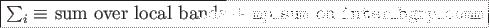intra_bgrp_comm and intra_pool_comm coincide if there is just one band group.
Plane waves (
+ or vectors up to the specified
kinetic energy cutoff) are distributed across processors of the
intra_bgrp_comm communicators. Sums over all plane waves
or G-vectors (as e.g. in scalar products
 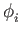|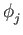
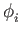|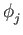 )
should be performed as follows:
)
should be performed as follows:
The same holds for real-space FFT's grid.
IF ( ionode ) THEN OPEN ( ..., IOSTAT=ierr ) ... END IF CALL mp_bcast( ierr, ... , intra_image_comm ) CALL errore( 'routine','error', ierr )The same applies to all operations performed on a single processor, or a subgroup of processors: any error code must be broadcast before the check.
Quantum ESPRESSO employ arrays whose memory requirements fall into three categories.
QUANTUM ESPRESSO restart file specifications: Paolo Giannozzi scripsit AD 2005-11-11, Last modified by Andrea Ferretti 2006-10-29
Requirements: the data file should be
Format name: QEXML
Format version: 1.4.0
The "restart file" is actually a "restart directory", containing several files and sub-directories. For CP/FPMD, the restart directory is created as "$prefix_$ndw/", where $prefix is the value of the variable "prefix". $ndw the value of variable ndw, both read in input; it is read from "$prefix_$ndr/", where $ndr the value of variable ndr, read from input. For PWscf, both input and output directories are called "$prefix.save/".
The content of the restart directory is as follows:
data-file.xml which contains:
- general information that doesn't require large data set:
atomic structure, lattice, k-points, symmetries,
parameters of the run, ...
- pointers to other files or directories containing bulkier
data: grids, wavefunctions, charge density, potentials, ...
charge_density.dat contains the charge density
spin_polarization.dat contains the spin polarization (rhoup-rhodw) (LSDA case)
magnetization.x.dat
magnetization.y.dat contain the spin polarization along x,y,z
magnetization.z.dat (noncollinear calculations)
lambda.dat contains occupations (Car-Parrinello dynamics only)
mat_z.1 contains occupations (ensemble-dynamics only)
<pseudopotentials> A copy of all pseudopotential files given in input
<k-point dirs> Subdirectories K00001/, K00002/, etc, one per k-point.
Each k-point directory contains:
evc.dat wavefunctions for spin-unpolarized calculations, OR
evc1.dat
evc2.dat spin-up and spin-down wavefunctions, respectively,
for spin polarized (LSDA) calculations;
gkvectors.dat the details of specific k+G grid;
eigenval.xml eigenvalues for the corresponding k-point
for spin-unpolarized calculations, OR
eigenval1.xml spin-up and spin-down eigenvalues,
eigenval2.xml for spin-polarized calculations;
in a molecular dynamics run, also wavefunctions at the preceding time step:
evcm.dat for spin-unpolarized calculations OR
evcm1.dat
evcm2.dat for spin polarized calculations;
XML Header: whatever is needed to have a well-formed XML file
Body: introduced by <Root>, terminated by </Root>. Contains first-level tags
only. These contain only other tags, not values. XML syntax applies.
First-level tags: contain either
second-level tags, OR
data tags: tags containing data (values for a given variable), OR
file tags: tags pointing to a file
data tags syntax ( [...] = optional ) :
<TAG type="vartype" size="n" [UNIT="units"] [LEN="k"]>
values (in appropriate units) for variable corresponding to TAG:
n elements of type vartype (if character, of length k)
</TAG>
where TAG describes the variable into which data must be read;
Short syntax, used only in a few cases:
<TAG attribute="something"/> .
For instance:
<FFT_GRID nr1="NR1" nr2="NR2" nr3="NR3"/>
defines the value of the FFT grid parameters nr1, nr2, nr3
for the charge density
<?xml version="1.0"?> <?iotk version="1.0.0test"?> <?iotk file_version="1.0"?> <?iotk binary="F"?>These are meant to be used only by iotk (actually they aren't)
First-level tags:
- <HEADER> (global information about fmt version)
- <CONTROL> (miscellanea of internal information)
- <STATUS> (information about the status of the CP simulation)
- <CELL> (lattice vector, unit cell, etc)
- <IONS> (type and positions of atoms in the unit cell etc)
- <SYMMETRIES> (symmetry operations)
- <ELECTRIC_FIELD> (details for an eventual applied electric field)
- <PLANE_WAVES> (basis set, cutoffs etc)
- <SPIN> (info on spin polarizaztion)
- <MAGNETIZATION_INIT> (info about starting or constrained magnetization)
- <EXCHANGE_CORRELATION>
- <OCCUPATIONS> (occupancy of the states)
- <BRILLOUIN_ZONE> (k-points etc)
- <PARALLELISM> (specialized info for parallel runs)
- <CHARGE-DENSITY>
- <TIMESTEPS> (positions, velocities, nose' thermostats)
- <BAND_STRUCTURE_INFO> (dimensions and basic data about band structure)
- <EIGENVALUES> (eigenvalues and related data)
- <EIGENVECTORS> (eigenvectors and related data)
* Tag description
<HEADER>
<FORMAT> (name and version of the format)
<CREATOR> (name and version of the code generating the file)
</HEADER>
<CONTROL>
<PP_CHECK_FLAG> (whether file is complete and suitable for post-processing)
<LKPOINT_DIR> (whether kpt-data are written in sub-directories)
<Q_REAL_SPACE> (whether augmentation terms are used in real space)
<BETA_REAL_SPACE> (whether projectors are used in real space, not implemented)
</CONTROL>
<STATUS> (optional, written only by CP)
<STEP> (number $n of steps performed, i.e. we are at step $n)
<TIME> (total simulation time)
<TITLE> (a job descriptor)
<ekin> (kinetic energy)
<eht> (hartree energy)
<esr> (Ewald term, real-space contribution)
<eself> (self-interaction of the Gaussians)
<epseu> (pseudopotential energy, local)
<enl> (pseudopotential energy, nonlocal)
<exc> (exchange-correlation energy)
<vave> (average of the potential)
<enthal> (enthalpy: E+PV)
</STATUS>
<CELL>
<NON-PERIODIC_CELL_CORRECTION>
<BRAVAIS_LATTICE>
<LATTICE_PARAMETER>
<CELL_DIMENSIONS> (cell parameters)
<DIRECT_LATTICE_VECTORS>
<UNITS_FOR_DIRECT_LATTICE_VECTORS>
<a1>
<a2>
<a3>
<RECIPROCAL_LATTICE_VECTORS>
<UNITS_FOR_RECIPROCAL_LATTICE_VECTORS>
<b1>
<b2>
<b3>
</CELL>
<MOVING_CELL> (optional, PW only)
<CELL_FACTOR>
<IONS>
<NUMBER_OF_ATOMS>
<NUMBER_OF_SPECIES>
<UNITS_FOR_ATOMIC_MASSES>
For each $n-th species $X:
<SPECIE.$n>
<ATOM_TYPE>
<MASS>
<PSEUDO>
</SPECIE.$n>
<PSEUDO_DIR>
<UNITS_FOR_ATOMIC_POSITIONS>
For each atom $n of species $X:
<ATOM.$n SPECIES="$X" INDEX=nt tau=(x,y,z) if_pos=...>
</IONS>
<SYMMETRIES> (optional, PW only)
<NUMBER_OF_SYMMETRIES>
<NUMBER_OF_BRAVAIS_SYMMETRIES>
<INVERSION_SYMMETRY>
<DO_NOT_USE_TIME_REVERSAL>
<TIME_REVERSAL_FLAG>
<NO_TIME_REV_OPERATIONS>
<NUMBER_OF_ATOMS>
<UNITS_FOR_SYMMETRIES>
For each symmetry $n:
<SYMM.$n>
<INFO>
<ROTATION>
<FRACTIONAL_TRANSLATION>
<EQUIVALENT_IONS>
</SYMM.$n>
For the remaining bravais symmetries:
<SYMM.$n>
<INFO>
<ROTATION>
</SYMM.n>
</SYMMETRIES>
<ELECTRIC_FIELD> (optional, sawtooth field in PW only))
<HAS_ELECTRIC_FIELD>
<HAS_DIPOLE_CORRECTION>
<FIELD_DIRECTION>
<MAXIMUM_POSITION>
<INVERSE_REGION>
<FIELD_AMPLITUDE>
</ELECTRIC_FIELD>
<PLANE_WAVES>
<UNITS_FOR_CUTOFF>
<WFC_CUTOFF>
<RHO_CUTOFF>
<MAX_NUMBER_OF_GK-VECTORS>
<GAMMA_ONLY>
<FFT_GRID>
<GVECT_NUMBER>
<SMOOTH_FFT_GRID>
<SMOOTH_GVECT_NUMBER>
<G-VECTORS_FILE> link to file "gvectors.dat"
<SMALLBOX_FFT_GRID>
</PLANE_WAVES>
<SPIN>
<LSDA>
<NON-COLINEAR_CALCULATION>
<SPIN-ORBIT_CALCULATION>
<SPINOR_DIM>
<SPIN-ORBIT_DOMAG>
</SPIN>
<MAGNETIZATION_INIT>
<CONSTRAINT_MAG>
<NUMBER_OF_SPECIES>
For each species X:
<SPECIE.$n>
<STARTING_MAGNETIZATION>
<ANGLE1>
<ANGLE2>
<CONSTRAINT_1,2,3>
</SPECIE.$n>
<FIXED_MAGNETIZATION_1,2,3>
<MAGNETIC_FIELD_1,2,3>
<TWO_FERMI_ENERGIES>
<UNITS_FOR_ENERGIES>
<FIXED_MAGNETIZATION>
<ELECTRONS_UP>
<ELECTRONS_DOWN>
<FERMI_ENERGY_UP>
<FERMI_ENERGY_DOWN>
<LAMBDA>
</MAGNETIZATION_INIT>
<EXCHANGE_CORRELATION>
<DFT>
<LDA_PLUS_U_CALCULATION>
if LDA_PLUS_U_CALCULATION
<NUMBER_OF_SPECIES>
<HUBBARD_LMAX>
<HUBBARD_L>
<HUBBARD_U>
<LDA_PLUS_U_KIND>
<U_PROJECTION_TYPE>
<HUBBARD_J>
<HUBBARD_J0>
<HUBBARD_ALPHA>
<HUBBARD_BETA>
endif
if <NON_LOCAL_DF>
<VDW_KERNEL_NAME>
if <DFT_D2>
<SCALING_FACTOR>
<CUTOFF_RADIUS>
if <XDM>
if <TKATCHENKO-SCHEFFLER>
<ISOLATED_SYSTEM>
</EXCHANGE_CORRELATION>
if hybrid functional
<EXACT_EXCHANGE>
<x_gamma_extrapolation>
<nqx1>
<nqx2>
<nqx3>
<exxdiv_treatment>
<yukawa>
<ecutvcut>
<exx_fraction>
<screening_parameter>
</EXACT_EXCHANGE>
endif
<OCCUPATIONS>
<SMEARING_METHOD>
if gaussian smearing
<SMEARING_TYPE>
<SMEARING_PARAMETER>
endif
<TETRAHEDRON_METHOD>
if use tetrahedra
<NUMBER_OF_TETRAHEDRA>
for each tetrahedron $t
<TETRAHEDRON.$t>
endif
<FIXED_OCCUPATIONS>
if using fixed occupations
<INFO>
<INPUT_OCC_UP>
if lsda
<INPUT_OCC_DOWN>
endif
endif
</OCCUPATIONS>
<BRILLOUIN_ZONE>
<NUMBER_OF_K-POINTS>
<UNITS_FOR_K-POINTS>
<MONKHORST_PACK_GRID>
<MONKHORST_PACK_OFFSET>
For each k-point $n:
<K-POINT.$n>
<STARTING_F_POINTS>
For each starting k-point $n:
<K-POINT_START.$n> kx, ky, kz, wk
<NORM-OF-Q>
</BRILLOUIN_ZONE>
<PARALLELISM>
<GRANULARITY_OF_K-POINTS_DISTRIBUTION>
<NUMBER_OF_PROCESSORS>
<NUMBER_OF_PROCESSORS_PER_POOL>
<NUMBER_OF_PROCESSORS_PER_IMAGE>
<NUMBER_OF_PROCESSORS_PER_TASKGROUP>
<NUMBER_OF_PROCESSORS_PER_POT>
<NUMBER_OF_PROCESSORS_PER_BAND_GROUP>
<NUMBER_OF_PROCESSORS_PER_DIAGONALIZATION>
</PARALLELISM>
<CHARGE-DENSITY>
link to file "charge_density.rho"
</CHARGE-DENSITY>
<TIMESTEPS> (optional)
For each time step $n=0,M
<STEP$n>
<ACCUMULATORS>
<IONS_POSITIONS>
<stau>
<svel>
<taui>
<cdmi>
<force>
<IONS_NOSE>
<nhpcl>
<nhpdim>
<xnhp>
<vnhp>
<ekincm>
<ELECTRONS_NOSE>
<xnhe>
<vnhe>
<CELL_PARAMETERS>
<ht>
<htve>
<gvel>
<CELL_NOSE>
<xnhh>
<vnhh>
</CELL_NOSE>
</TIMESTEPS>
<BAND_STRUCTURE_INFO>
<NUMBER_OF_BANDS>
<NUMBER_OF_K-POINTS>
<NUMBER_OF_SPIN_COMPONENTS>
<NON-COLINEAR_CALCULATION>
<NUMBER_OF_ATOMIC_WFC>
<NUMBER_OF_ELECTRONS>
<UNITS_FOR_K-POINTS>
<UNITS_FOR_ENERGIES>
<FERMI_ENERGY>
</BAND_STRUCTURE_INFO>
<EIGENVALUES>
For all kpoint $n:
<K-POINT.$n>
<K-POINT_COORDS>
<WEIGHT>
<DATAFILE> link to file "./K$n/eigenval.xml"
</K-POINT.$n>
</EIGENVALUES>
<EIGENVECTORS>
<MAX_NUMBER_OF_GK-VECTORS>
For all kpoint $n:
<K-POINT.$n>
<NUMBER_OF_GK-VECTORS>
<GK-VECTORS> link to file "./K$n/gkvectors.dat"
for all spin $s
<WFC.$s> link to file "./K$n/evc.dat"
<WFCM.$s> link to file "./K$n/evcm.dat" (optional)
containing wavefunctions at preceding step
</K-POINT.n>
</EIGENVECTORS>
There are currently no strict guidelines for developers. You should however follow at least the following loose ones:
#if defined (XXX), not #if defined XXX
or #ifdef XXX
INTEGER, INTENT(IN) :: N
REAL(dp), INTENT(OUT) :: A(N)
in this order (some compilers complain if you put the second line
before the first).
New input variables should be added to ''Modules/input_parameters.f90'', then copied to the code internal variables in the ''input.f90'' subroutine. The namelists and cards parsers are in ''Modules/read_namelists.f90'' and ''Modules/read_cards.f90''. Files ''input_parameters.f90'', ''read_namelists.f90'', ''read_cards.f90'' are shared by all codes, while each code has its own version of ''input.f90'' used to copy input values into internal variables
EXAMPLE: suppose you need to add a new input variable called ''pippo'' to the namelist control, then:
INTEGER :: pippo = 0
NAMELIST / control / ....., pippo
Remember: always set an initial value!
subroutine control_default( prog )
...
IF( prog == 'PW' ) pippo = 10
...
end subroutine
This routine sets the default value for pippo (can be different in
different codes)
subroutine control_bcast( )
...
call mp_bcast( pippo, intra_image_comm )
...
end subroutine
Subversion, also known as SVN, is a software that allows many developers to work and maintain a single copy of a software in a central location (repository). It is installed by default on many Unix machines, or otherwise it can be very easily installed. For the end user, SVN is rather similar to CVS: if no advanced features are used, the basic commands are the same. More information on SVN can be found here: http://subversion.apache.org/.
Current organization:
Follow the instructions in http://qe-forge.org/gf/project/q-e/scmsvn, under `Access Info'', to check out (i.e. download) the SVN repository. The distribution will appear in directory trunk/espresso/. Branches (i.e. sub-versions) will appear as separate directories.
Important notice: since v.5.3 the SVN repository is no longer accessible read-only to everybody.
To update the code to the current version:
svn updatein the directory containing the distribution. To see the difference between the current version and your modified copy:
svn diffTo save your modified version into the repository: (read-write access only):
svn commitPlease explain in a few words what your commit is about! Use option -m"comment" or the editor of your choice (set it using the SVN_EDITOR environment variable). If you want to add a new file, or a new directory, before commiting give command
svn addTo remove a file/directory (if empty):
svn deleteYou can move a file (a directory, a group of files, ...) into a different directory using command
svn mv dir1/file1 [dir1/file2 ...] dir2/or, if you prefer to make a copy of the file, retaining the history:
svn cp svn+ssh://myusername@qeforge.qe-forge.org/svnroot/q-e/trunk/espresso/DIR1/file.1 svn+ssh://myusername@qeforge.qe-forge.org/svnroot/q-e/trunk/espresso/DIR2/file2then run svn update to have it applied locally. After such operations are done, run the install/makedeps.sh script or type make depend to update files make.depend in the various subdirectories. It is preferrable to commit the moved files/modified directories and the affected Makefiles/make.depend in a single command.
<<<<<<<
(your version)
=======
(SVN version)
>>>>>>>
Sometimes, the conflict is not so easy to solve. In this case, you can selectively update your repository at a given date, or at a given revision number, using command (XXXXX=revision number)
svn update -r XXXXXYou can also select a date, using {"date"} instead of the revision number. In this way you can locate which change(s) is (are) the culprit(s). The web-SVN interface:
http://qe-forge.org/gf/project/q-e/scmsvnwill also be very helpful in locating the problem. Of course, communication with other developers will also help. The above paragraph applies as well to case 2. os conflicts, in presence or in absence of explicit SVN conflicts. If the reason for malfunctioning is not evident, you have to figure out when the problem started. Once this is done, itis usually straightforward to figure out why.
svn merge ^/trunk/espressoThe caret (^) syntax is a shorthand for the entire URL of the trunk. Then you have to remove conflicts that can arise from incompatible changes made in the trunk. Then you can commit your "aligned" branch (beware: the commit message is very large in size if you haven't merged recently; if so, it may never reach the q-e-commits mailing list).
In order to merge a branch back into the trunk, the simplest procedure is to align first the branch with the trunk and commit it, as above; then, in a clean, not locally modified, trunk:
svn merge --reintegrate ^/branches/my-espresso-branchthen, commit.
Note the following very useful property: SVN can merge anything with anything! The following web page may be useful: http://www.math-linux.com/spip.php?article118
West http://qeforge.qe-forge.org/svn/west/trunk GIPAW http://qeforge.qe-forge.org/svn/qe-gipaw/trunk
Git is a very populare versioning control system for collaborative development nowadays. The web is full of tutorials and guide about how to use it, covering simple novice concepts to master the most sophisticated functionalities. The following links contain an introduction to git:
https://git-scm.com/book/en/v2/Getting-Started-Git-Basics https://git-scm.com/course/svn.htmlVery quick guide to git commands for the impatient:
git add git commit git mergeIn order to save incomplete work and avoid local conflicts, one can use stash:
git stash save (save and remove modified files)The stash can be cleared using git clear. A few useful commands:
git pull (update files)
git stash apply (overwrite with locally modified files)
git status
git diff
Fortran books:
This document was generated using the LaTeX2HTML translator Version 2008 (1.71)
Copyright © 1993, 1994, 1995, 1996,
Nikos Drakos,
Computer Based Learning Unit, University of Leeds.
Copyright © 1997, 1998, 1999,
Ross Moore,
Mathematics Department, Macquarie University, Sydney.
The command line arguments were:
latex2html -t 'Developer's Manual for Quantum-ESPRESSO' -html_version 3.2,math -toc_depth 3 -split 3 -toc_stars -show_section_numbers -local_icons -image_type png developer_man.tex
The translation was initiated by Filippo Spiga on 2016-10-04